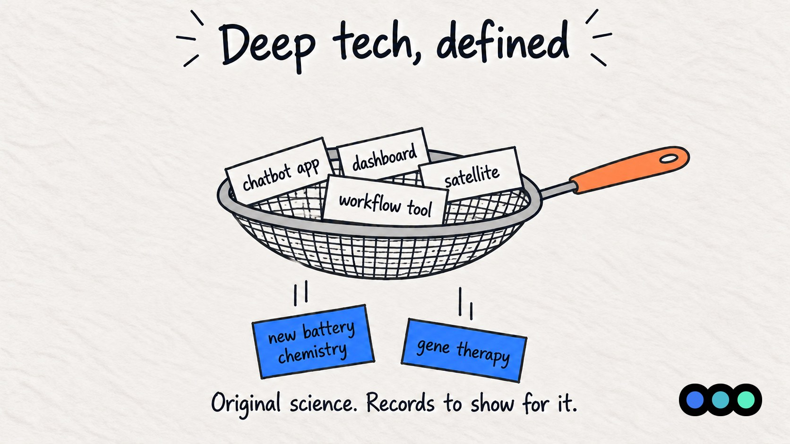
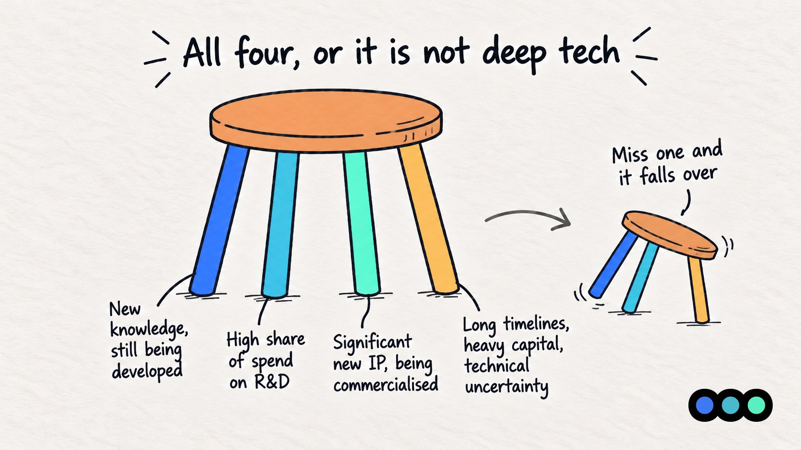
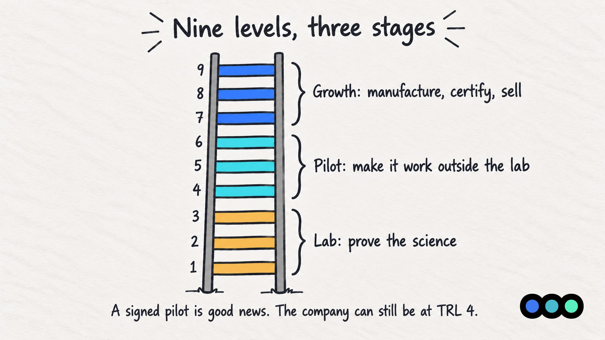
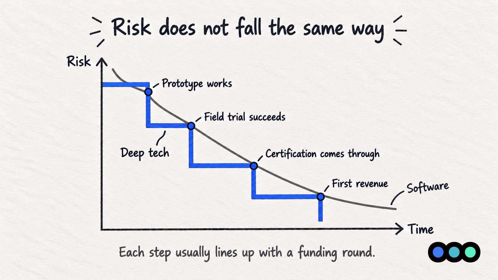

Prologue Blog · Sector Insights
Deep Tech, Defined
What actually counts, how investors measure it, and why the usual playbook does not fit

Few phrases get used as loosely in Indian startup circles right now as "deep tech". It gets applied to everything from satellite tech to an app with a chatbot attached. Since February it has also been a legal category, which makes it worth pinning down.
This piece covers the basics: what deep tech actually is, how investors measure where a company stands, and why the usual early-stage playbook does not fit it well.
What Counts as Deep Tech
The test I use is simple. What is the most likely pain point for a company? For most startups the answer is that customers won't pay enough, traction or customer retention.
For a deep-tech company it is that the technology won't work, or won't work at a cost anyone can live with. A team building a robotic perception system or cell & gene therapies has to solve a science problem before it gets to the market problem.
DPIIT's notification of 4 February 2026 (G.S.R. 108(E)) now puts this into the rules. It creates a separate category for deep-tech startups and sets four conditions a company has to meet together:
- It is working on something based on new knowledge or an advance in a scientific or engineering field, which is still being developed.
- It spends a high share of its money on R&D.
- It owns, or is building, significant new intellectual property and is working to commercialise it.
- It faces long development timelines, heavy capital and infrastructure needs, and real technical uncertainty.

Using AI or building hardware does not get a company over that bar. A workflow tool built on someone else's foundation model is a software business, with software risks. What the definition asks for is original science, and records that show for it.
How Investors Measure
Most deep tech conversations end up using the Technology Readiness Level (TRL) scale. NASA came up with it in the 1970s to judge how close a technology was to flight, and it has since spread into policy making.
In practice people group the nine levels into three stages.
| TRL | Stage | What it means |
|---|---|---|
| 1 | Lab | Basic scientific principles observed |
| 2 | Lab | A practical use for those principles is proposed |
| 3 | Lab | Proof of concept through analysis and experiment |
| 4 | Pilot | Components validated in the lab |
| 5 | Pilot | Components validated in a relevant environment |
| 6 | Pilot | Prototype system demonstrated in a relevant environment |
| 7 | Growth | Prototype demonstrated in real operating conditions |
| 8 | Growth | Final system built and qualified through testing |
| 9 | Growth | System proven in actual operation |

At the lab stage the money goes into proving the core science. At the pilot stage it goes into making something that works outside the lab. At the growth stage it goes into manufacturing, certification and sales.
The scale is useful because it keeps two questions apart. How mature is the tech & how mature is the business? Founders & Investors need to understand the difference. A signed pilot with a large customer is good news, but the company can still be at TRL 4.
When I read a deck I try to place the TRL early, because it tells me the kind of risk the round is actually paying for.
Why the SaaS Playbook Doesn't Fit in here
Much of what Indian VC knows about early stage investing was learned from software and the consumer internet. Those companies can reach revenue within months on a small team, and many Indian funds are built around them, with fund lives of five to seven years. Deep-tech companies often take several years to see first revenue, and seven to twelve to mature. They need labs, equipment and testing before there is a product at all.
The moat looks different too. A software company defends itself with distribution and speed. A deep-tech company relies on patents, know-how, scarce specialists and regulatory approvals. That changes who can judge progress. Most investors can read a retention curve. Far fewer can tell whether a field trial result is meaningful, which is why technical advisers matter so much in these deals.
The biggest difference, to me, is how risk comes down. In software it falls fairly steadily as the numbers come in. In deep tech it falls in steps. The prototype works, the field trial succeeds, the certification comes through. Each step usually lines up with a funding round, and the companies that run out of money between two steps are the ones that get stuck.

To Conclude
What makes a company deep tech is the kind of risk it carries, whatever the deck calls it. It moves in steps the TRL scale can describe, it takes longer and costs more than software, and investors have to judge the science before there is a market to judge.
If you are a founder in this space, know which TRL you are at and say so plainly. Keep your R&D and IP records in order from the start, since they now matter for DPIIT recognition as well as for investors. And plan your fundraising around technical milestones rather than the calendar.
This post is general information, not legal or tax advice. The DPIIT deep-tech category and its conditions are summarised here in plain words; the notification itself is the authority. Check your own position with your CA or company secretary before relying on it.
Bibliography
Publications and reports referred to in this article.
- Banke, Jim. "Technology Readiness Levels Demystified." NASA, 20 August 2010.
- Department for Promotion of Industry and Internal Trade (DPIIT). Notification G.S.R. 108(E). 4 February 2026.
- Indian Venture and Alternate Capital Association (IVCA). Bharat DeepTech Report 2026: From Lab to Leadership. First edition, 2026.
- Treelife. "Decoding DPIIT Deep Tech for startups: eligibility and taxation." 13 July 2026.
Building something the market has not seen?
Deep-tech founders raise on a different curve. The round is paying down technical risk, not market risk, and the deck has to say which one it is clearing next.
Prologue works with founders before they raise, on the pitch deck, the financial model and the story investors will test. If you are building in deep tech and planning a round, talk to us.

About Siddarth Menon
Siddarth Menon is an Investment Associate at Earlyseed Ventures, holding a Master's degree in Financial Research and Technical Analysis. With nearly four years of combined experience across private and public markets, Siddarth works closely with startups on their fundraising journeys and M&A transactions.